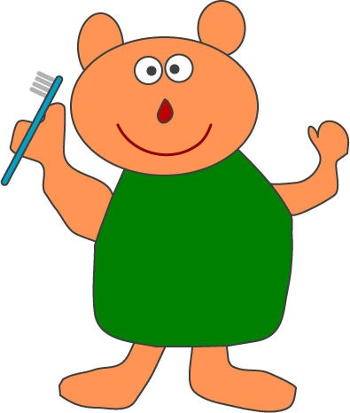

ご挨拶
当院は、地域の皆様に「信頼され、安心して通える歯科医院」を目指して日々の診療にあたっております。
歯科医療は「痛くなってから行く場所」ではなく、「健康を守るために通う場所」へと変わってきています。
私たちは患者様一人一人に寄り添い、それぞれの皆様のお口の状態やライフスタイルにあった丁寧なカウンセリングと分かりやすい説明を心がけております。
それぞれの患者様にあった、最適な治療・予防プランをご提案いたします。
プロフィール
- [名前]
- 穴山宏美
- [趣味]
- 水泳
- [略歴]
- 昭和５２年日本歯科大学卒業
元日本接着歯科学会専門医 - ［その他役職］
- 川口市介護認定審査会委員 一般社団法人川口歯科医師会学術部長
-
-